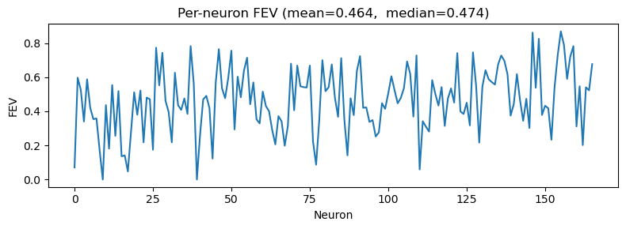
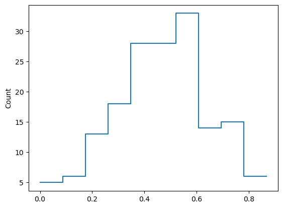
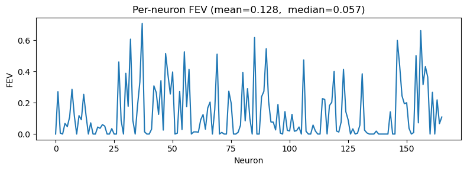
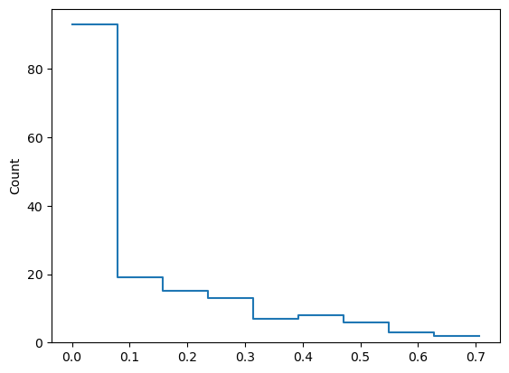
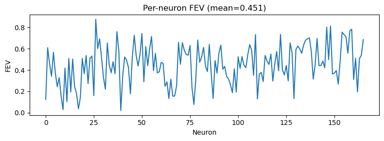
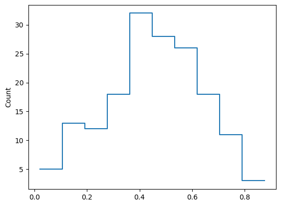

(01) Cadena Data (Michael’s Demo)#
Standalone ConvNet training on Cadena V1 data with held-out FEV reporting.
import importlib
from mcfe.utils.plotting import *
os.environ.setdefault('CUDA_VISIBLE_DEVICES', '2,3')
module_file_path = '/home/hadi/Dropbox/git/_CadenaV1/modules.py'
spec = importlib.util.spec_from_file_location('modules_file', module_file_path)
modules_file = importlib.util.module_from_spec(spec)
sys.modules['modules_file'] = modules_file
spec.loader.exec_module(modules_file)
DEFAULT_DATA_PATH = modules_file.DEFAULT_DATA_PATH
build_dataloaders = modules_file.build_dataloaders
fit_sgd = modules_file.fit_sgd
get_dataset_specs = modules_file.get_dataset_specs
get_train_val_datasets = modules_file.get_train_val_datasets
pick_device = modules_file.pick_device
run_eval = modules_file.run_eval
print('CUDA_VISIBLE_DEVICES =', os.environ.get('CUDA_VISIBLE_DEVICES'))
print('Dataset path =', DEFAULT_DATA_PATH)
print('CUDA available =', torch.cuda.is_available())
if torch.cuda.is_available():
print('Visible GPUs =', torch.cuda.device_count())
print('GPU[0] =', torch.cuda.get_device_name(0))
CUDA_VISIBLE_DEVICES = 2,3
Dataset path = /home/hadi/Datasets/CadenaV1/cadena_ploscb_data.pkl
CUDA available = True
Visible GPUs = 2
GPU[0] = NVIDIA RTX 6000 Ada Generation
spec = get_dataset_specs()
print('Neurons:', spec.num_neurons)
print('Total images:', spec.num_images_total)
print('First split train images:', spec.train_images_first_split)
print('First split val images:', spec.val_images_first_split)
print('Repetition distribution (trials/image by neuron):', spec.unique_repetition_counts)
train_ds, val_ds = get_train_val_datasets()
device = pick_device()
train_ds.to(device)
val_ds.to(device)
train_dl, val_dl = build_dataloaders(train_ds, val_ds, batch_size=1_000)
print('Device:', device)
print('Train samples:', len(train_ds), 'Val samples:', len(val_ds))
Neurons: 166
Total images: 7250
First split train images: 5800
First split val images: 1450
Repetition distribution (trials/image by neuron): {2: 51, 4: 115}
Device: cuda:1
Train samples: 18560 Val samples: 4640
from mcfe.main.load_model import load_model
from mcfe.common.helpers import print_num_params
my conv (deep)#
dims = list(train_ds[0]['stim'].shape)
num_neurons = train_ds[0]['robs'].shape[0]
print(f"dims = {dims},\tnum_neurons = {num_neurons}")
dims = [1, 40, 40], num_neurons = 166
latent_channels = 256
latent_pixels = 10
model = modules_file.ConvNetHadi(
dims=dims,
latent_channels=latent_channels,
latent_pixels=latent_pixels,
num_neurons=num_neurons,
base_channels=32,
use_se=True,
deep=True,
).to(device)
print_num_params(model)
+-------------+------------+ | Module Name | Num Params | +-------------+------------+ | ConvNetHadi | 441.8 K | | ——— | ——— | | net | 323.4 K | | readout | 118.4 K | +-------------+------------+
lr = 1e-3
optimizer = torch.optim.AdamW(
model.parameters(),
lr=lr,
weight_decay=0.1,
)
%%time
best_state, losses, vlosses = fit_sgd(
model,
train_dl,
val_dl,
optimizer,
max_epochs=1000,
patience=20,
laplace_coeff=0.0,
min_lr=lr / 10,
)
model.load_state_dict(best_state)
/home/hadi/Dropbox/git/_CadenaV1/modules.py:305: RuntimeWarning: Degrees of freedom <= 0 for slice.
obs_var = torch.nanmean(torch.tensor(np.nanvar(resp_n.numpy(), axis=0, ddof=1)))
Epoch 0, lr: 0.000021, Validation Loss: 2.516765594482422
New best model
Epoch 10, lr: 0.000221, Validation Loss: 0.0008521754061803222
Epoch 20, lr: 0.000421, Validation Loss: -0.03522922471165657
Epoch 30, lr: 0.000620, Validation Loss: -0.2002895325422287
Epoch 40, lr: 0.000820, Validation Loss: -0.3451235890388489
New best model
/home/hadi/anaconda3/lib/python3.11/site-packages/torch/optim/lr_scheduler.py:209: UserWarning: The epoch parameter in `scheduler.step()` was not necessary and is being deprecated where possible. Please use `scheduler.step()` to step the scheduler. During the deprecation, if epoch is different from None, the closed form is used instead of the new chainable form, where available. Please open an issue if you are unable to replicate your use case: https://github.com/pytorch/pytorch/issues/new/choose.
warnings.warn(EPOCH_DEPRECATION_WARNING, UserWarning)
Epoch 50, lr: 0.001000, Validation Loss: -0.4194369614124298
New best model
Epoch 60, lr: 0.001000, Validation Loss: -0.44988980889320374
Epoch 70, lr: 0.000999, Validation Loss: -0.4351850748062134
Epoch 80, lr: 0.000998, Validation Loss: -0.4442605972290039
Stopping early due to no improvement
CPU times: user 7min 17s, sys: 820 ms, total: 7min 17s
Wall time: 2min 45s
<All keys matched successfully>
fev, var_explained, explainable_var, mse, total_variance = run_eval(model, val_dl)
fev_mean = torch.nanmean(fev).item()
fev_all = torch.nan_to_num(fev.detach().cpu(), nan=0.0).clip(min=0)
print('Number of neurons:', spec.num_neurons)
print('Trials per image (repeat-count distribution):', spec.unique_repetition_counts)
print('Held-out FEV mean:', fev_mean)
plt.figure(figsize=(8, 3))
plt.plot(fev_all)
plt.title(f'Per-neuron FEV (mean={fev_mean:.3f}, median={np.nanmedian(fev_all):0.3f})')
plt.xlabel('Neuron')
plt.ylabel('FEV')
plt.tight_layout()
plt.show()
Number of neurons: 166
Trials per image (repeat-count distribution): {2: 51, 4: 115}
Held-out FEV mean: 0.46396347880363464

histplot(fev_all);

my conv (linear)#
dims = list(train_ds[0]['stim'].shape)
num_neurons = train_ds[0]['robs'].shape[0]
print(f"dims = {dims},\tnum_neurons = {num_neurons}")
dims = [1, 40, 40], num_neurons = 166
latent_channels = 256
latent_pixels = 11
model = modules_file.ConvNetHadi(
dims=dims,
latent_channels=latent_channels,
latent_pixels=latent_pixels,
num_neurons=num_neurons,
base_channels=32,
use_se=True,
deep=False,
).to(device)
print_num_params(model)
+-------------+------------+ | Module Name | Num Params | +-------------+------------+ | ConvNetHadi | 151.2 K | | ——— | ——— | | net | 25.9 K | | readout | 125.3 K | +-------------+------------+
print(model.net)
Conv2d(1, 256, kernel_size=(10, 10), stride=(3, 3))
lr = 1e-3
optimizer = torch.optim.AdamW(
model.parameters(),
lr=lr,
weight_decay=0.1,
)
%%time
best_state, losses, vlosses = fit_sgd(
model,
train_dl,
val_dl,
optimizer,
max_epochs=1000,
patience=20,
laplace_coeff=0.0,
min_lr=lr / 10,
)
model.load_state_dict(best_state)
/home/hadi/Dropbox/git/_CadenaV1/modules.py:305: RuntimeWarning: Degrees of freedom <= 0 for slice.
obs_var = torch.nanmean(torch.tensor(np.nanvar(resp_n.numpy(), axis=0, ddof=1)))
Epoch 0, lr: 0.000021, Validation Loss: 2.535613536834717
New best model
Epoch 10, lr: 0.000221, Validation Loss: 0.172164648771286
New best model
Epoch 20, lr: 0.000421, Validation Loss: -0.08768348395824432
New best model
Epoch 30, lr: 0.000620, Validation Loss: -0.12579092383384705
New best model
Epoch 40, lr: 0.000820, Validation Loss: -0.12193469703197479
/home/hadi/anaconda3/lib/python3.11/site-packages/torch/optim/lr_scheduler.py:209: UserWarning: The epoch parameter in `scheduler.step()` was not necessary and is being deprecated where possible. Please use `scheduler.step()` to step the scheduler. During the deprecation, if epoch is different from None, the closed form is used instead of the new chainable form, where available. Please open an issue if you are unable to replicate your use case: https://github.com/pytorch/pytorch/issues/new/choose.
warnings.warn(EPOCH_DEPRECATION_WARNING, UserWarning)
Epoch 50, lr: 0.001000, Validation Loss: -0.10453908145427704
Stopping early due to no improvement
CPU times: user 3min 20s, sys: 315 ms, total: 3min 20s
Wall time: 32.8 s
<All keys matched successfully>
fev, var_explained, explainable_var, mse, total_variance = run_eval(model, val_dl)
fev_mean = torch.nanmean(fev).item()
fev_all = torch.nan_to_num(fev.detach().cpu(), nan=0.0).clip(min=0)
print('Number of neurons:', spec.num_neurons)
print('Trials per image (repeat-count distribution):', spec.unique_repetition_counts)
print('Held-out FEV mean:', fev_mean)
plt.figure(figsize=(8, 3))
plt.plot(fev_all)
plt.title(f'Per-neuron FEV (mean={fev_mean:.3f}, median={np.nanmedian(fev_all):0.3f})')
plt.xlabel('Neuron')
plt.ylabel('FEV')
plt.tight_layout()
plt.show()
Number of neurons: 166
Trials per image (repeat-count distribution): {2: 51, 4: 115}
Held-out FEV mean: 0.12765207886695862

histplot(fev_all);

fit Jake’s model#
dims = list(train_ds[0]['stim'].shape)
num_neurons = train_ds[0]['robs'].shape[0]
model = modules_file.ConvNet(dims=dims, output_channels=num_neurons, sigma=0.1).to(device)
optimizer = torch.optim.AdamW(
model.parameters(),
lr=1e-3,
weight_decay=0.1,
)
from mcfe.common.helpers import print_num_params
print_num_params(model)
+-------------+------------+ | Module Name | Num Params | +-------------+------------+ | ConvNet | 246.0 K | | ——— | ——— | | net | 127.7 K | | readout | 118.4 K | +-------------+------------+
%%time
best_state, losses, vlosses = fit_sgd(
model,
train_dl,
val_dl,
optimizer,
max_epochs=200,
patience=20,
laplace_coeff=0.1,
)
model.load_state_dict(best_state)
/home/hadi/Dropbox/git/_CadenaV1/modules.py:295: RuntimeWarning: Degrees of freedom <= 0 for slice.
obs_var = torch.nanmean(torch.tensor(np.nanvar(resp_n.numpy(), axis=0, ddof=1)))
Epoch 0, LR: 0.000168, Validation Loss: 1979.427490234375
New best model
Epoch 1, LR: 0.000334, Validation Loss: 575.0392456054688
New best model
Epoch 2, LR: 0.000501, Validation Loss: 63.87322998046875
New best model
Epoch 3, LR: 0.000667, Validation Loss: 3.693742036819458
New best model
Epoch 4, LR: 0.000834, Validation Loss: 0.6995421648025513
New best model
/home/hadi/anaconda3/lib/python3.11/site-packages/torch/optim/lr_scheduler.py:209: UserWarning: The epoch parameter in `scheduler.step()` was not necessary and is being deprecated where possible. Please use `scheduler.step()` to step the scheduler. During the deprecation, if epoch is different from None, the closed form is used instead of the new chainable form, where available. Please open an issue if you are unable to replicate your use case: https://github.com/pytorch/pytorch/issues/new/choose.
warnings.warn(EPOCH_DEPRECATION_WARNING, UserWarning)
Epoch 5, LR: 0.001000, Validation Loss: 0.19936513900756836
New best model
Epoch 6, LR: 0.001000, Validation Loss: 0.015290189534425735
New best model
Epoch 7, LR: 0.000999, Validation Loss: -0.05756127089262009
New best model
Epoch 8, LR: 0.000998, Validation Loss: -0.10106614977121353
New best model
Epoch 9, LR: 0.000997, Validation Loss: -0.1257004588842392
New best model
Epoch 10, LR: 0.000995, Validation Loss: -0.15615405142307281
New best model
Epoch 11, LR: 0.000993, Validation Loss: -0.15673241019248962
New best model
Epoch 12, LR: 0.000991, Validation Loss: -0.20177286863327026
New best model
Epoch 13, LR: 0.000988, Validation Loss: -0.2165473848581314
New best model
Epoch 14, LR: 0.000985, Validation Loss: -0.21852178871631622
New best model
Epoch 15, LR: 0.000981, Validation Loss: -0.24608729779720306
New best model
Epoch 16, LR: 0.000977, Validation Loss: -0.2623971104621887
New best model
Epoch 17, LR: 0.000973, Validation Loss: -0.27697187662124634
New best model
Epoch 18, LR: 0.000969, Validation Loss: -0.28299444913864136
New best model
Epoch 19, LR: 0.000964, Validation Loss: -0.29529622197151184
New best model
Epoch 20, LR: 0.000958, Validation Loss: -0.3061249852180481
New best model
Epoch 21, LR: 0.000953, Validation Loss: -0.30715036392211914
New best model
Epoch 22, LR: 0.000947, Validation Loss: -0.3229755163192749
New best model
Epoch 23, LR: 0.000940, Validation Loss: -0.3234703242778778
New best model
Epoch 24, LR: 0.000934, Validation Loss: -0.3305278420448303
New best model
Epoch 25, LR: 0.000927, Validation Loss: -0.3329048752784729
New best model
Epoch 26, LR: 0.000919, Validation Loss: -0.3437587320804596
New best model
Epoch 27, LR: 0.000912, Validation Loss: -0.34682217240333557
New best model
Epoch 28, LR: 0.000904, Validation Loss: -0.35015010833740234
New best model
Epoch 29, LR: 0.000896, Validation Loss: -0.3679486811161041
New best model
Epoch 30, LR: 0.000887, Validation Loss: -0.3708798885345459
New best model
Epoch 31, LR: 0.000878, Validation Loss: -0.37364715337753296
New best model
Epoch 32, LR: 0.000869, Validation Loss: -0.377844899892807
New best model
Epoch 33, LR: 0.000860, Validation Loss: -0.37626197934150696
Epoch 34, LR: 0.000850, Validation Loss: -0.3842422664165497
New best model
Epoch 35, LR: 0.000840, Validation Loss: -0.3903994858264923
New best model
Epoch 36, LR: 0.000830, Validation Loss: -0.3943852484226227
New best model
Epoch 37, LR: 0.000820, Validation Loss: -0.39492854475975037
New best model
Epoch 38, LR: 0.000809, Validation Loss: -0.40163540840148926
New best model
Epoch 39, LR: 0.000798, Validation Loss: -0.3972223103046417
Epoch 40, LR: 0.000787, Validation Loss: -0.4021366536617279
New best model
Epoch 41, LR: 0.000776, Validation Loss: -0.410613089799881
New best model
Epoch 42, LR: 0.000764, Validation Loss: -0.4047175943851471
Epoch 43, LR: 0.000753, Validation Loss: -0.41167619824409485
New best model
Epoch 44, LR: 0.000741, Validation Loss: -0.40782850980758667
Epoch 45, LR: 0.000729, Validation Loss: -0.417129248380661
New best model
Epoch 46, LR: 0.000716, Validation Loss: -0.4133031368255615
Epoch 47, LR: 0.000704, Validation Loss: -0.4192364811897278
New best model
Epoch 48, LR: 0.000691, Validation Loss: -0.416782021522522
Epoch 49, LR: 0.000679, Validation Loss: -0.42265379428863525
New best model
Epoch 50, LR: 0.000666, Validation Loss: -0.4249534606933594
New best model
Epoch 51, LR: 0.000653, Validation Loss: -0.4191432297229767
Epoch 52, LR: 0.000640, Validation Loss: -0.4285297989845276
New best model
Epoch 53, LR: 0.000627, Validation Loss: -0.4279091954231262
Epoch 54, LR: 0.000613, Validation Loss: -0.42974090576171875
New best model
Epoch 55, LR: 0.000600, Validation Loss: -0.42992013692855835
New best model
Epoch 56, LR: 0.000586, Validation Loss: -0.4231323301792145
Epoch 57, LR: 0.000573, Validation Loss: -0.424179345369339
Epoch 58, LR: 0.000559, Validation Loss: -0.43407145142555237
New best model
Epoch 59, LR: 0.000546, Validation Loss: -0.4316490888595581
Epoch 60, LR: 0.000532, Validation Loss: -0.4185311794281006
Epoch 61, LR: 0.000519, Validation Loss: -0.43555358052253723
New best model
Epoch 62, LR: 0.000505, Validation Loss: -0.43538376688957214
Epoch 63, LR: 0.000491, Validation Loss: -0.4365343749523163
New best model
Epoch 64, LR: 0.000478, Validation Loss: -0.42207852005958557
Epoch 65, LR: 0.000464, Validation Loss: -0.4406052231788635
New best model
Epoch 66, LR: 0.000451, Validation Loss: -0.3936976194381714
Epoch 67, LR: 0.000437, Validation Loss: -0.43486398458480835
Epoch 68, LR: 0.000424, Validation Loss: -0.4287233054637909
Epoch 69, LR: 0.000410, Validation Loss: -0.4358108639717102
Epoch 70, LR: 0.000397, Validation Loss: -0.4431706666946411
New best model
Epoch 71, LR: 0.000383, Validation Loss: -0.3970404863357544
Epoch 72, LR: 0.000370, Validation Loss: -0.42898330092430115
Epoch 73, LR: 0.000357, Validation Loss: -0.4400918781757355
Epoch 74, LR: 0.000344, Validation Loss: -0.4428657591342926
Epoch 75, LR: 0.000331, Validation Loss: -0.4441245198249817
New best model
Epoch 76, LR: 0.000319, Validation Loss: -0.44464313983917236
New best model
Epoch 77, LR: 0.000306, Validation Loss: -0.4356848895549774
Epoch 78, LR: 0.000294, Validation Loss: -0.4398619532585144
Epoch 79, LR: 0.000281, Validation Loss: -0.44174569845199585
Epoch 80, LR: 0.000269, Validation Loss: -0.4474753737449646
New best model
Epoch 81, LR: 0.000258, Validation Loss: -0.4404126703739166
Epoch 82, LR: 0.000246, Validation Loss: -0.4432106614112854
Epoch 83, LR: 0.000234, Validation Loss: -0.44019851088523865
Epoch 84, LR: 0.000223, Validation Loss: -0.44410622119903564
Epoch 85, LR: 0.000212, Validation Loss: -0.4473690390586853
Epoch 86, LR: 0.000201, Validation Loss: -0.4470250606536865
Epoch 87, LR: 0.000190, Validation Loss: -0.4372248351573944
Epoch 88, LR: 0.000180, Validation Loss: -0.4465509355068207
Epoch 89, LR: 0.000170, Validation Loss: -0.4465748965740204
Epoch 90, LR: 0.000160, Validation Loss: -0.4500674605369568
New best model
Epoch 91, LR: 0.000150, Validation Loss: -0.44600561261177063
Epoch 92, LR: 0.000141, Validation Loss: -0.44868654012680054
Epoch 93, LR: 0.000132, Validation Loss: -0.4500522315502167
Epoch 94, LR: 0.000123, Validation Loss: -0.4499441087245941
Epoch 95, LR: 0.000114, Validation Loss: -0.44805532693862915
Epoch 96, LR: 0.000106, Validation Loss: -0.44701945781707764
Epoch 97, LR: 0.000098, Validation Loss: -0.4470151960849762
Epoch 98, LR: 0.000091, Validation Loss: -0.4480215311050415
Epoch 99, LR: 0.000083, Validation Loss: -0.44537046551704407
Epoch 100, LR: 0.000076, Validation Loss: -0.4463728070259094
Epoch 101, LR: 0.000070, Validation Loss: -0.45079854130744934
New best model
Epoch 102, LR: 0.000063, Validation Loss: -0.44932159781455994
Epoch 103, LR: 0.000057, Validation Loss: -0.4469248354434967
Epoch 104, LR: 0.000052, Validation Loss: -0.45127615332603455
New best model
Epoch 105, LR: 0.000046, Validation Loss: -0.45078492164611816
Epoch 106, LR: 0.000041, Validation Loss: -0.4514051675796509
New best model
Epoch 107, LR: 0.000037, Validation Loss: -0.4504493474960327
Epoch 108, LR: 0.000033, Validation Loss: -0.4494101405143738
Epoch 109, LR: 0.000029, Validation Loss: -0.45118969678878784
Epoch 110, LR: 0.000025, Validation Loss: -0.44799861311912537
Epoch 111, LR: 0.000022, Validation Loss: -0.44974610209465027
Epoch 112, LR: 0.000019, Validation Loss: -0.45029082894325256
Epoch 113, LR: 0.000017, Validation Loss: -0.449974924325943
Epoch 114, LR: 0.000015, Validation Loss: -0.44811105728149414
Epoch 115, LR: 0.000013, Validation Loss: -0.4494428038597107
Epoch 116, LR: 0.000012, Validation Loss: -0.4495518207550049
Epoch 117, LR: 0.000011, Validation Loss: -0.45035111904144287
Epoch 118, LR: 0.000010, Validation Loss: -0.44937142729759216
Epoch 119, LR: 0.000010, Validation Loss: -0.45070919394493103
CPU times: user 9min 4s, sys: 1.32 s, total: 9min 6s
Wall time: 2min 39s
<All keys matched successfully>
eval#
fev, var_explained, explainable_var, mse, total_variance = run_eval(model, val_dl)
fev_mean = torch.nanmean(fev).item()
fev_all = torch.nan_to_num(fev.detach().cpu(), nan=0.0).clip(min=0)
print('Number of neurons:', spec.num_neurons)
print('Trials per image (repeat-count distribution):', spec.unique_repetition_counts)
print('Held-out FEV mean:', fev_mean)
plt.figure(figsize=(8, 3))
plt.plot(fev_all)
plt.title(f'Per-neuron FEV (mean={fev_mean:.3f})')
plt.xlabel('Neuron')
plt.ylabel('FEV')
plt.tight_layout()
plt.show()
Number of neurons: 166
Trials per image (repeat-count distribution): {2: 51, 4: 115}
Held-out FEV mean: 0.4514051675796509

histplot(fev_all);
